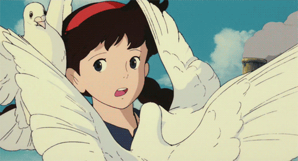
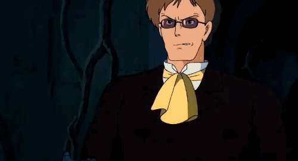
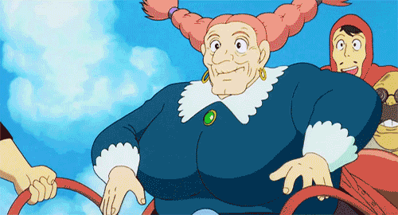
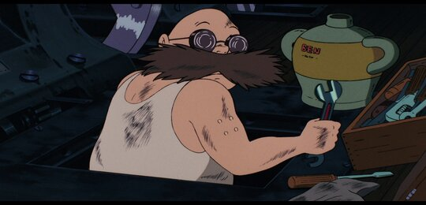

Castle In The Sky
Home | About | Contact |

About
Castle in the Sky (Japanese: 天空の城ラピュタ, Hepburn: Tenkū no Shiro Rapyuta), also known as Laputa: Castle in the Sky, is a 1986 Japanese animated fantasy adventure film written and directed by Hayao Miyazaki. It was produced by Isao Takahata, animated by Studio Ghibli, and distributed by the Toei Company. In voice acting roles, the original Japanese version stars Mayumi Tanaka, Keiko Yokozawa, Kotoe Hatsui, and Minori Terada. The film follows orphans Sheeta and Pazu, who are pursued by government agent Muska, the army, and a group of pirates. They seek Sheeta's crystal necklace, the key to accessing Laputa, a legendary flying castle hosting advanced technology.
Castle in the Sky is the first film to be animated by Studio Ghibli. Its production team included many of Miyazaki's longtime collaborators, who would continue to work with the studio for the following three decades. The film was partly inspired by Miyazaki's trips to Wales, where he witnessed the aftermath of the 1984–1985 coal miners' strike. The island of Laputa is used to highlight the theme of environmentalism, exploring the relationships between humanity, nature, and technology, a reflection of Miyazaki's ecological philosophy. The young protagonists also provide a unique perspective on the narrative, as a result of Miyazaki's desire to portray "the honesty and goodness of children in [his] work."[1] Many aspects of the film's retrofuturistic style – the flying machines in particular – are influenced by nineteenth-century approaches, which has earned the film a reputation in the modern steampunk genre.
The film was released in Japanese theaters on August 2, 1986. It underperformed expectations at the box office, but later achieved commercial success through rereleases, earning over US$157 million as of 2021. An English dub commissioned by Tokuma Shoten in 1988 was distributed in North America by Streamline Pictures, and another dub was produced by Disney in 1998, released internationally by Buena Vista in 2003. The film's score was composed by Joe Hisaishi, who would become a close collaborator of Miyazaki's; Hisaishi also composed a reworked soundtrack for the 2003 English dub. The film was generally acclaimed by critics, though the English dubs received mixed reviews. It was well-received by audiences, being voted as one of the greatest animated films in polls conducted by the Agency for Cultural Affairs and Oricon. The film also received several notable accolades, including the Ōfuji Noburō Award at the Mainichi Film Awards and the Anime Grand Prix from Animage. Castle in the Sky has since earned "cult status",[2] and has influenced several notable artists working in multiple media.
Characters
- Sheeta

Sheeta (シータ, Shīta), born Lusheeta Toel Ul Laputa (リュシータ・トエル・ウル・ラピュタ , Ryushīta Toeru Uru Rapyuta, 'Toel' meaning 'True' and 'UI' meaning 'Ruler' in Laputian) is one of the main characters in the film, Castle in the Sky.
- Pazu Laputa

Pazu (パズー, Pazū) is one of the primary protagonists of Castle in the Sky and becomes Sheeta's close friend and love interest after she lands in the mining city he lives in.
- Muska

Colonel Muska (ムスカ大佐, "Muska taisa") is a government special agent and the main antagonist of the movie Castle in the Sky. His goal is to seize control of Laputa's superior technological power by using the Aetherium crystal. It is also revealed that he is biologically related to Sheeta and a descendant of the royal line of Laputa, as his full name is Romska Palo Ul Laputa. He was voiced by Minori Terada in Japanese, Jeff Winkless in the Streamline English version, and Mark Hamill in the Disney English version.
- Dola

Dola (ドーラ, Dōra) is the captain of a band of air pirates in Castle in the Sky. Her nemesis is Colonel Muska. She is interested in the treasures of the ancient floating city of Laputa, which initially puts her at odds with the film's protagonists.
- Motro

Hara Motro (ハラ・モトロ, Hara Motoro) is a character from Castle in the Sky. He is Dola's husband and works on board the airship Tiger Moth as its engineer.